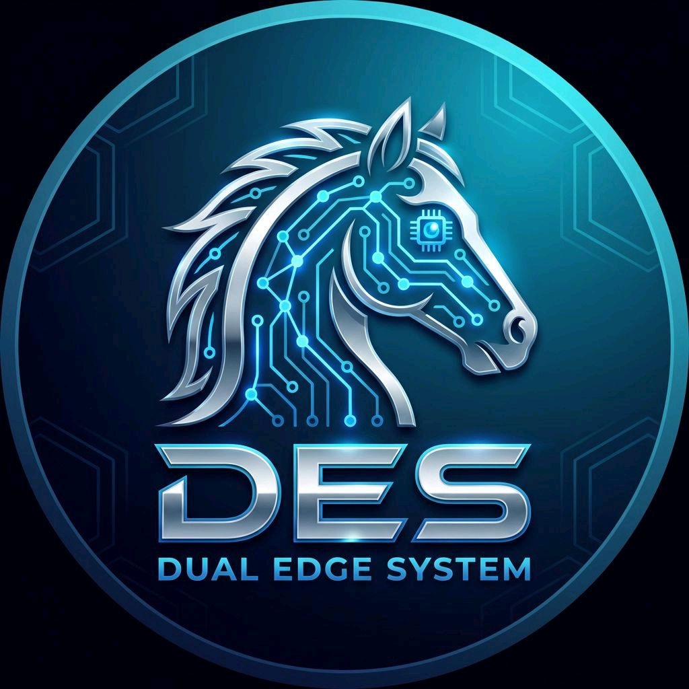

DES_AI競馬予想は、AIによる断層オッズ分析とスコア評価をもとに、三連複予想と結果検証を無料で公開するサイトです。予想を見るだけで終わらず、翌日の結果まで同じ基準で確認できることを重視しています。
閲覧者が「今日どこを見ればよいか」をすぐ理解できるよう、推奨と参考を分けて表示しています。また、結果ページでは100円単位で損益を統一表示し、後から見返した時にも判断しやすい形にしています。
見栄えだけでなく、予想→結果→統計→改善の流れが追えることを重視しています。